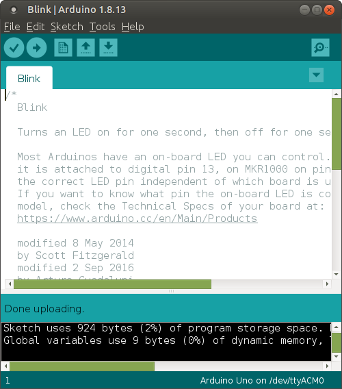

Ubuntuではaptというコマンドを使ってソフトウェアをインストールします。 UbuntuのバージョンとROSのバージョンには1対1の対応関係があり、 Ubuntu 18.04の場合はMelodicになります。
APT（Advanced Package Tool）とは、 Linuxでソフトウェアのインストールや管理、削除に用いられる パッケージ管理システムの一つです。 また、それを操作する「コマンド」のことをいいます。
https://www.arduino.cc/en/Main/Software
Linux ARM 32 bitsをクリック。
JUST DOWNLOADをクリック。
Save Fileを選択して［OK］ボタンをクリック。
Downloadsディレクトリにファイルが保存される。
ターミナルを起動して、Downloadsに移動
$ cd Downloads/
ファイルを確認
$ ls arduino-1.8.13-linuxarm.tar.xz
ファイルを展開
$ tar -Jxvf arduino-1.8.13-linuxarm.tar.xz
展開したファイルを確認
$ ls arduino-1.8.13 arduino-1.8.13-linuxarm.tar.xz
展開したファイルを移動。
$ sudo mv arduino-1.8.13 /opt/
パスワードを入力。
[sudo] password for pi:
移動したファイルのディレクトリに移動。
$ cd /opt/arduino-1.8.13/
ショートカットを作成。
$ sudo ./install.sh
次のように表示されたら成功。
Adding desktop shortcut, menu item and file associations for Arduino IDE... done!
デスクトップにショートカットが作成されている。
Arduino IDEを起動。
サンプルプログラムを開く。
LEDを点滅させるプログラムが書かれている。
プログラムを保存する。
保存先はホームディレクトリの下のArduinoディレクトリ。
BoardとPortを設置する。
Uploadボタンを押すと、コンパイルと書き込みをしてくれる。
エラーが発生。
can't open device "/dev/ttyACM0"というエラーメッセージが見える。 次のコマンドを実行してポートを開けるようにする。
最初にdialoutにユーザーを追加する。
$ sudo usermod -a -G dialout pi
パスワードを入力する。
[sudo] password for pi:
次にポートの権限を確認する。
$ ls -l /dev/ttyAMA0 crw-rw---- 1 root dialout 204, 64 9月 7 09:32 /dev/ttyAMA0
権限を追加する。
sudo chmod a+rw /dev/ttyAMA0
権限が追加された。
$ ls -l /dev/ttyAMA0
crw-rw-rw- 1 root dialout 204, 64 9月 7 09:32 /dev/ttyAMA0
今度はうまくいった。

Arduinoのボード上にあるLEDが点滅します。